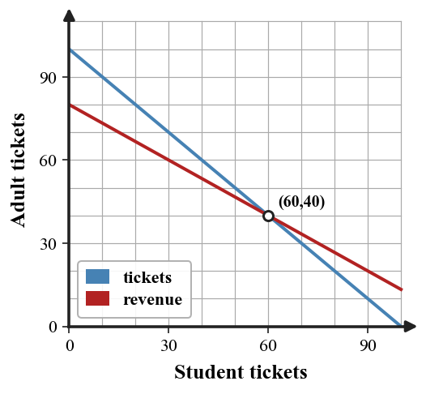
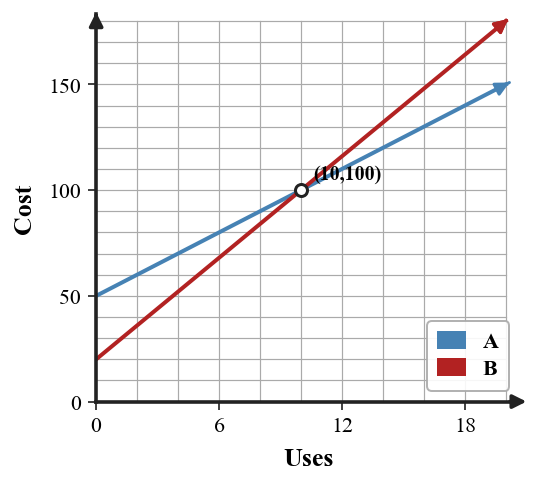

Writing and Solving Systems from Situations
Mathematical idea: A system from a situation uses variables and equations to represent two conditions that must both be true.
Today you will define variables, write two equations, solve the system, and explain the answer in context. You will also check whether the solution is reasonable for the situation.
Learning Target
Learning Target: Students will create and solve systems that model real-world situations.
I can statements
- I can build a system of equations that represents two constraints in a situation.
- I can predict the meaning of a solution before solving from the context and variables.
- I can design a solution pathway that connects equations, calculations, and a contextual conclusion.
What's To Come
This is a long-range preview for future lessons. Do not solve it today. Instead, annotate it individually. Circle anything familiar, underline symbols or directions that seem important, and write notes about what information you think will be needed later.
As you annotate, ask yourself: What parts (words, symbols, graphs) do you KNOW? What parts look FAMILIAR? What parts look like jibberish?
A club is choosing between two bus companies. Company A charges \$180 plus \$6 per student. Company B charges \$90 plus \$9 per student. A draft graph labels the intersection as $(30,270)$ but the written conclusion says “Company A is always cheaper.”
- Revise the written conclusion so it matches the model.
- Explain what each coordinate of the intersection means.
- State which company is cheaper for 20 students and for 40 students.
Intro
Directions
Read the introduction aloud with a partner or in a small group. As you read, annotate the text by highlighting important ideas, circling key vocabulary, and writing short notes about connections, questions, or predictions in the margins.
Paragraph A. A situation becomes a system when there are two conditions to satisfy. In a ticket problem, an equation like $s+a=120$ represents the total number of tickets sold. It does not tell the prices yet; it only organizes the count constraint.
Paragraph B. Variables make the model readable. If $s$ means student tickets and $a$ means adult tickets, then every term in the equations has a clear meaning. Defining variables first helps prevent mixing up counts, costs, and totals.
Paragraph C. Before solving, the story can tell you what kind of answer to expect. Ticket counts should usually be whole numbers, and costs should match the units in the problem. If a solution says negative tickets were sold, the model or work needs to be checked.
Paragraph D. Useful representations include verbal descriptions, variable definitions, systems of equations, tables, graphs, and contextual conclusions. The best work connects the algebraic solution back to the original situation.
Paragraph E. Many contexts compare plans, prices, or mixtures. The intersection or ordered pair is not just a number pair; it tells the exact combination or break-even point that satisfies both conditions.
Stop and Discuss
- What does an equation like $s+a=120$ represent in a ticket situation?
- Why should variables be defined before writing equations?
- How can the context help you predict what the solution should mean?
A model starts by naming variables and translating each condition into an equation.
| Story part | Equation meaning |
|---|---|
| 100 total tickets | $s+a=100$ |
| Revenue is 960 dollars | $8s+12a=960$ |
| Solution | $s=60$, $a=40$ |

Context: The point $(60,40)$ means 60 student tickets and 40 adult tickets satisfy both total tickets and revenue.
Example 1: Read a total equation
A theater sells child tickets $c$ and adult tickets $a$ for one show. The equation $c+a=160$ is part of the model.
- Explain what $c+a=160$ means in this context.
- What information would a second equation need to include?
- Why would $c=160$ and $a=160$ not make sense with this equation?
You Try It 1: Read another total equation
For a field trip, $b$ represents bus riders and $v$ represents van riders. The equation $b+v=92$ is part of the model.
- Explain what the equation means in the situation.
- What kind of information could create a second equation?
- Why does the equation alone not tell how many riders used each type of transportation?
Stop and Discuss
- What information did the total equation include, and what information did it leave out?
After writing both equations, solve the system and keep the units attached to each coordinate.
$$\begin{aligned}n+d&=70\\5n+8d&=440\end{aligned}$$| Variable | Meaning | Solution value |
|---|---|---|
| $n$ | number of notebooks | 40 |
| $d$ | number of drawing pads | 30 |

The conclusion should name the objects, not just the ordered pair.
Example 2: Build and solve a ticket system
A concert sells 110 tickets for 1,030 dollars. Adult tickets cost 12 dollars and student tickets cost 7 dollars. Let $a$ be adult tickets and $s$ be student tickets.
- Write one equation for the number of tickets and one equation for the money.
- Solve the system for $a$ and $s$.
- Write a sentence explaining the solution in context.
You Try It 2: Build and solve another context system
A school store sells 85 items for 485 dollars. T-shirts cost 8 dollars and water bottles cost 3 dollars. Let $t$ be shirts and $w$ be water bottles.
- Write a system that models the total items and total money.
- Solve for $t$ and $w$.
- Check whether the answer is reasonable for the story.
Stop and Discuss
- Why did the solution need a sentence instead of only an ordered pair?
When two plans are equal, set their cost equations equal and interpret the intersection.
$$50+5x=20+8x$$| $x$ | Plan A: $50+5x$ | Plan B: $20+8x$ |
|---|---|---|
| 8 | 90 | 44 |
| 10 | 100 | 100 |
| 12 | 110 | 116 |

Context: At 10 uses, both plans cost 100 dollars, so that point is the break-even point.
Example 3: Find a break-even point
Bike Rental A charges 18 dollars plus 4 dollars per hour. Bike Rental B charges 6 dollars plus 7 dollars per hour.
- Write an equation that can be solved to find when the rental costs are equal.
- Solve for the number of hours and the equal cost.
- Explain which company is cheaper before and after the break-even point.
You Try It 3: Break-even in a new context
Gym Plan A charges 35 dollars plus 5 dollars per visit. Gym Plan B charges 15 dollars plus 9 dollars per visit.
- Write an equation to find when the costs are equal.
- Solve and state the break-even point.
- Explain which plan costs less for 3 visits and for 8 visits.
Stop and Discuss
- How did values on both sides of the break-even point help you compare the plans?
Example 4: Connect graph, equations, and conclusion
A music club compares two fundraising options. Option A starts with 40 dollars and earns 6 dollars per sale. Option B starts with 10 dollars and earns 9 dollars per sale.
- Write equations for both options.
- Solve to find when the totals are equal.
- A student says, "Option B is always better because it grows faster." Critique the claim using the starting amounts and the intersection.
You Try It 4: Revise a conclusion
A club compares two poster companies. Company A charges 70 dollars plus 2 dollars per poster. Company B charges 25 dollars plus 5 dollars per poster.
- Write equations for both companies.
- Find the number of posters when the costs are equal.
- A student says Company B is always cheaper. Revise the conclusion so it matches the model.
Stop and Discuss
- What evidence would convince you that a written conclusion matches the equations?
Summary
A context system uses variables and two equations to represent two conditions in the same situation.
The key representation rule is to define variables before writing equations so each term has a clear meaning.
A common error is solving correctly but giving a conclusion that does not match the units or the story.
Strong understanding means you can build the model, solve it, and explain why the solution is reasonable.
Common Mistakes
- Skipping variable definitions. Why it is tempting: the letters may seem obvious. What to check instead: write what each variable represents before equations.
- Mixing totals and costs. Why it is tempting: both equations use the same variables. What to check instead: separate count constraints from money constraints.
- Ignoring units. Why it is tempting: ordered pairs look abstract. What to check instead: name what each coordinate means.
- Accepting unreasonable values. Why it is tempting: algebra can produce any number. What to check instead: check whether values fit the context.
- Overgeneralizing from slope. Why it is tempting: faster growth feels always better. What to check instead: compare starting value and intersection too.
Optional Future Task Reflection
Look back at the future task. Do not solve it yet. Highlight one part that makes more sense now than it did at the beginning. Circle one part that still feels unfamiliar. Write one sentence about what representation you would look at first.
In a ticket context, if $s$ is student tickets and $a$ is adult tickets, what does $s+a=120$ represent?
Adult tickets cost \$12 and student tickets cost \$8. A group sells 95 tickets for \$920. Let $a$ be adult tickets and $s$ be student tickets. Write and solve a system for $a$ and $s$.
What is one idea about writing and solving systems from situations you understand better now than at the start of class? Write at least one complete sentence.
What is one thing about writing and solving systems from situations you still want to understand or practice? Be specific — name the idea, not just "everything."